Chi-square, correlation and simple linear regression
ETX1100/5900 | Business Statistics
5 January 2027
Source: Workshop_slides_Week_4_with_solutions.pdf, page 1
ETX1100/5900 Business Statistics
The Chi-Square Test for Independence: Assessing relationships between categorical variables

Visual from source page 1.
Save these slides as a PDF
Press E, then Ctrl/Cmd + P and choose Save as PDF.
OR
Click ☰ (menu) > Tools > PDF export mode, then Ctrl/Cmd + P and choose Save as PDF.
Source: Workshop_slides_Week_4_with_solutions.pdf, page 2
The Chi-Square Test for Independence: Assessing relationships between categorical variables
Textbook references: Berenson et al Basic Business Statistics 5th edition, Chapter 15, Section 15.3.
Source: Workshop_slides_Week_4_with_solutions.pdf, page 3
Assignment
Due date: 19 December 2025, 11:55 pm Weighting: This assignment is worth 15% of the total assessment for this unit. Submission location: Submit via the Assignment submission link available under the Assessment tab on Moodle. Number of attempts: Only ONE (1) attempt is permitted. - Dataset: Use the Excel file titled “Assignment Data.xlsx”, available under the Assessment tab on Moodle.
Source: Workshop_slides_Week_4_with_solutions.pdf, page 4
Hypothesis Test for Evidence-based Decisions
A statistical framework for using data to derive evidence-based decisions. Define business problem and variables relevant to that problem Formulate a hypothesis around these variables that are relevant to business decisions Collect representative data Conduct hypothesis testing to establish the degree of evidence for the hypotheses Based on evidence, make business decisions
Source: Workshop_slides_Week_4_with_solutions.pdf, page 5
H0: Defendant is not guilty (‘status quo’; default)
H1: Defendant is guilty (experimental/research hypothesis) Reject H0: There IS enough evidence against H0 GUILTY! Do not reject H0: There IS NOT enough evidence against H0 NOT GUILTY (INNOCENT!) 5 An hypothesis test is conducted to decide between two hypotheses: the null H0 and the alternative, H1. Hypothesis Testing ……..Is a familiar process
Source: Workshop_slides_Week_4_with_solutions.pdf, page 6
Please download and install the Slido app on all computers you use
What types of variables are “Education Level” & “Smoking Status”, respectively. Note: Start presenting to display the poll results on this slide.
Source: Workshop_slides_Week_4_with_solutions.pdf, page 7
Please download and install the Slido app on all computers you use
If two variables are independent Note: Start presenting to display the poll results on this slide.
Source: Workshop_slides_Week_4_with_solutions.pdf, page 8
We conduct a hypothesis test when we consider relationships between categorical variables - Chi Square Test For Independence
For a contingency table with r rows and c columns, use the \chi^2 test of independence for two categorical variables.
Visual from source page 8.
Source: Workshop_slides_Week_4_with_solutions.pdf, page 9
Step 1:
H0: The two categorical variables are independent (No relationship between variables) H1: The two categorical variables are dependent (i.e. there is a relationship). Note: We test on the assumption that the Null hypothesis (H0) is true i.e. that the attributes are independent. What we actually observe in the datavs What we would expect to see if the two variables were independent If the observed counts are very different from the expected counts, that’s evidence that the variables are related. 5 Steps
Source: Workshop_slides_Week_4_with_solutions.pdf, page 10
Step 2: Test Statistic
The test statistic is \chi^2=\sum\frac{(f_o-f_e)^2}{f_e},\qquad f_e=\frac{(\text{row total})(\text{column total})}{\text{overall total}}. Here f_o is an observed count and f_e is its expected count if H_0 is true. Degrees of freedom are (r-1)(c-1). Expected counts below 5 make this approximation unreliable.
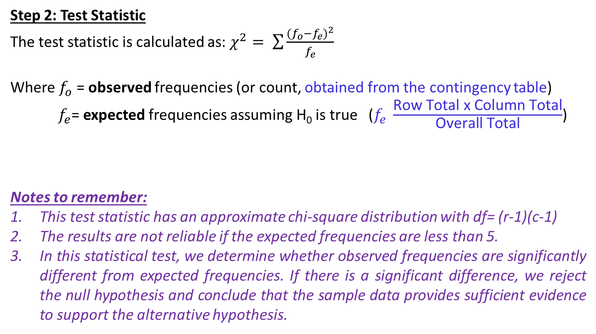
Visual from source page 10.
Source: Workshop_slides_Week_4_with_solutions.pdf, page 11
Step 3: Critical Value or P-value
Critical value approach/ p-value approach Critical value approach: Look up \chi{}2 table OR P-value: Use Excel =chisq.test(actual range,expected range) 5 Steps
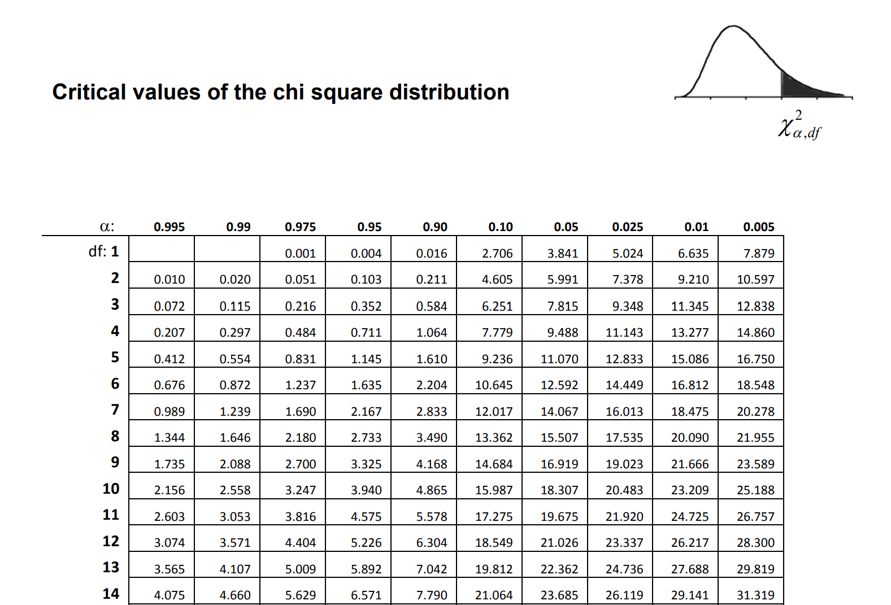
Visual from source page 11.
Source: Workshop_slides_Week_4_with_solutions.pdf, page 12
Step 4: Decision
Reject H_0 when \chi^2_{\text{calc}}>\chi^2_{\text{crit}}, or when the p value is below \alpha. Reject Ho when p-value < \alpha{} Step 5: Conclusion State the conclusion within the context of the problem. Always refer to H1 Eg: The sample provides sufficient evidence at the 5% level of significance that the variables xxx and xxx are dependent. Steps 4 and 5: Decision and Conclusion 0 alpha Reject H0 Do not Reject H0 chi-square critical value
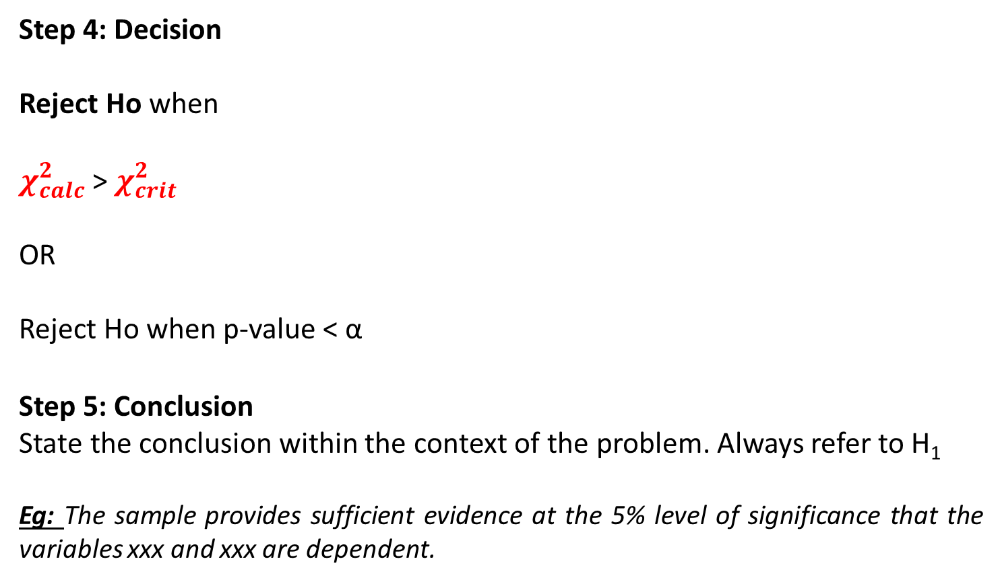
Source: Workshop_slides_Week_4_with_solutions.pdf, page 13
During the past decade many smokers have attempted to quit. Unfortunately, nicotine is highly addictive. A researcher from the Addiction Research Council wanted to determine why some people quit for good while others relapse. He surveyed 115 people who planned to quit smoking and, among other things, recorded their educational level and whether, one year later, they continued to smoke. The following pivot table was produced, which shows the counts for the various combinations of categories:
Task 1: Education Level vs Smoking Status Education Level Smoking Status Did not quit Quit Did not finish high school 9 16 High school graduate 26 21 TAFE graduate 4 15 University bachelors or postgraduate degree 7 17
Source: Workshop_slides_Week_4_with_solutions.pdf, page 14
What is the proportion of TAFE graduates?
- We wish to test the hypothesis that Education Level and Smoking Status are independent at a 5% level of significance. What type of test is appropriate? Explain. c) State the hypotheses for the test stated above. d) State the test statistic and the p-value. e) Interpret the results in the context of the question. Task 1: Education Level vs Smoking Status
Source: Workshop_slides_Week_4_with_solutions.pdf, page 15
What is the proportion of TAFE graduates?
Proportion of TAFE Graduates = 19/115 = 0.1652 or 16.52% b) We wish to test the hypothesis that Education Level and Smoking Status are independent at a 5% level of significance. What type of test is appropriate? Explain. The Chi-square test of independence is an appropriate test since the variables “Smoking status” and “Education Level” are both categorical variables. c) State the hypotheses for the test stated above. H0: The variables Smoking Status and Education Level are independent H1: The variables Smoking Status and Education Level are dependent Task 1: Education Level vs Smoking Status
Source: Workshop_slides_Week_4_with_solutions.pdf, page 16
d) State the test statistic and the p-value
- Interpret the results in the context of the question. Task 1: Education Level vs Smoking Status
Source: Workshop_slides_Week_4_with_solutions.pdf, page 17
d) State the test statistic and the p-value
Test statistic = 8.778 (refer to Excel sheet for working or next slide for screenshot) P-value = 0.032391 Task 1: Education Level vs Smoking Status
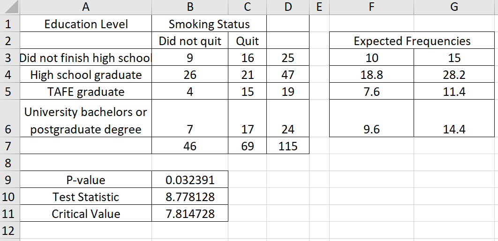
Visual from source page 17.
Source: Workshop_slides_Week_4_with_solutions.pdf, page 18
Task 1: Excel formulas
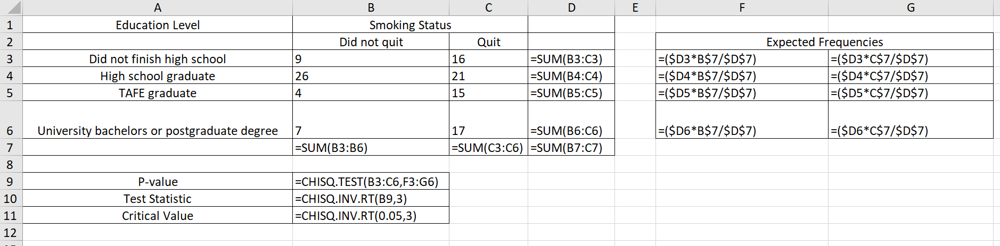
Visual from source page 18.
Source: Workshop_slides_Week_4_with_solutions.pdf, page 19
Task 1: Education Level vs Smoking Status
- Interpret the results in the context of the question. Since the p-value (0.0324) is smaller than alpha (0.05), we reject the null hypothesis. The sample provides sufficient evidence at the 5% level of significance that the variables Smoking Status and Education Level are dependent.
Source: Workshop_slides_Week_4_with_solutions.pdf, page 20
It is generally agreed that convertibles offer freedom and excitement. They create a sensation of being a part of your surroundings that no sunroof can offer. On the other hand, sedans are stylish yet practical for small families. The back doors are also handy for rear seat access, and the boot is a secure way to store luggage or cargo.
A car importer believes that there is a relationship between buyers’ gender and their preference of sedans or convertibles. The importer gathered some information on the preference of male and female buyers and this is shown in below. Task 2: Convertibles
Source: Workshop_slides_Week_4_with_solutions.pdf, page 21
Task 2: Convertibles
TABLE 1 Gender Male Female Total Preference Convertibles 30 8 38 Sedans 56 38 94 Total 86 46 132 Calculate the test statistics and p-values for Tables 1 and 2 above TABLE 2 Gender Male Female Total Preference Convertibles 15 4 19 Sedans 28 19 47 Total 43 23 66 We created another contingency table, halved all observed frequencies, and labeled it as Table 2.
Source: Workshop_slides_Week_4_with_solutions.pdf, page 22
Task 2: Convertibles
Solutions for part a: Test statistic for Table 1: 4.47 p-value for Table 1: 0.0345 Test Statistic for Table 2: 2.23 p-value for Table 2: 0.1354
Source: Workshop_slides_Week_4_with_solutions.pdf, page 23
Task 2: Convertibles
- Point out why the formula for the \chi^2 value allows the test statistic and p-value to be different in the two cases even though all the observed and expected frequencies are proportional. The formula for the test statistic \chi^2 has a square of frequencies in the numerator and just a frequency in the denominator. So, if you double all the frequencies, you will double \chi^2. Building on this idea: Doubling all observed and expected frequencies results in the numerator increasing by a factor of four (because of the square) and the denominator increasing by a factor of two. As a result, the overall \chi^2 value doubles. This explains why the test statistic is different, even though the tables are proportional.
Source: Workshop_slides_Week_4_with_solutions.pdf, page 24
Task 2: Convertibles
- Point out why the formula for the \chi^2 value allows the test statistic and p-value to be different in the two cases even though all the observed and expected frequencies are proportional. The formula for the test statistic \chi^2 has a square of frequencies in the numerator and just a frequency in the denominator. So, if you double all the frequencies, you will double \chi^2. Building on this idea: Doubling all observed and expected frequencies results in the numerator increasing by a factor of four (because of the square) and the denominator increasing by a factor of two. As a result, the overall \chi^2 value doubles. This explains why the test statistic is different, even though the tables are proportional.
Source: Workshop_slides_Week_4_with_solutions.pdf, page 25
Task 3: The Missing Data Mystery
Visual from source page 25.
Source: Workshop_slides_Week_4_with_solutions.pdf, page 26
Task 3: The Missing Data Mystery
There are 4 statistical puzzles! Work in your group to crack each statistical puzzle level by level. Solve the statistical tasks correctly to unlock the next stage. After each level, solve a short riddle to collect a keyword. There are also some emojis to help you answer the riddles. Once all levels are completed, combine the collected words into a final answer. Accuracy matters more than speed. Good luck, detectives!
Source: Workshop_slides_Week_4_with_solutions.pdf, page 27
Task 3: The Missing Data Mystery
P(UsedCoupon = Yes) = P(UsedCoupon = Yes | AgeGroup = Young) Using these probabilities, determine whether the two categories (UsedCoupon and AgeGroup) are dependent or not. Select the correct answer.
Source: Workshop_slides_Week_4_with_solutions.pdf, page 28
Task 3: The Missing Data Mystery
Find the p-value The evidence has been laid out, and it’s time to make a decision. Is there enough evidence to send the Disruptor to jail? We reject the null at the 5% level of significance. The categories are dependent. We can send the Distorter to jail. We do not reject the null at the 5% level of significance. The categories are not dependent. The Distorter goes free.
Week 5: relationships in business data
- Two categorical variables: chi-square test of independence.
- Two numerical variables: scatterplot, correlation and simple linear regression.
- Use the linked source pages to check the original worked examples. Historical class instructions on those pages are superseded by the current schedule and Moodle.
Relationships between numerical variables
Source: Seminar Week 8 ETF1100 S1 2026 Updated.pdf, page 4
This section prepares you to:
- Characterise relationships between variables.
- Model a relationship using simple linear regression.
- Understand how regression coefficients are estimated and interpret coefficients, predictions and confidence intervals.
- Extend the idea to multiple regression in Week 6.
Three ways to study a numerical relationship
Source: Seminar Week 8 ETF1100 S1 2026 Updated.pdf, page 5
- Scatterplot: visualise the relationship between two numerical variables.
- Covariance: measure whether the variables tend to move together or in opposite directions.
- Correlation: measure the direction and strength of their linear relationship on a common scale.
Start with a scatterplot
Source: Seminar Week 8 ETF1100 S1 2026 Updated.pdf, page 6
In the real-estate example, area is the explanatory variable X and price is the response variable Y. The plot suggests a positive relationship.
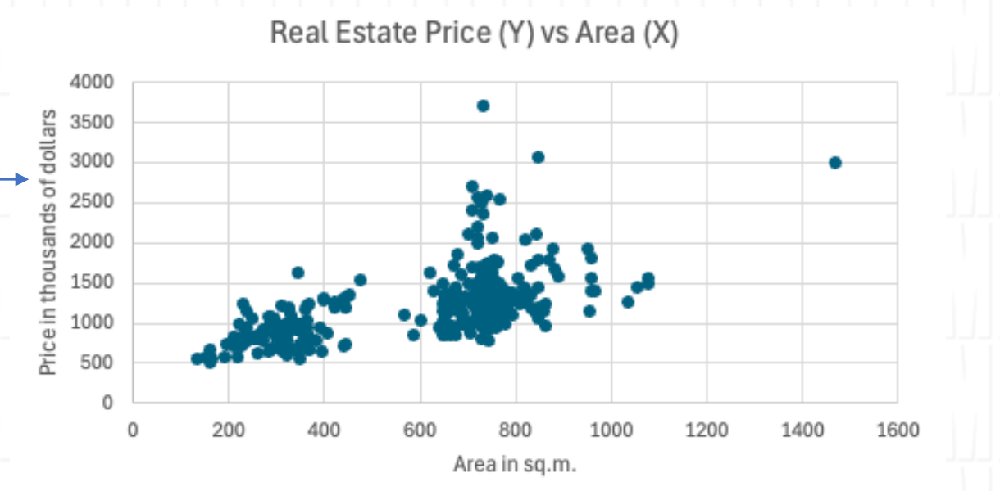
Real-estate price against area, cropped from the source slide.
Covariance: direction of movement
Source: Seminar Week 8 ETF1100 S1 2026 Updated.pdf, page 7
- Positive covariance: larger X values tend to occur with larger Y values.
- Negative covariance: larger X values tend to occur with smaller Y values.
We expect area and price to have positive covariance.
Calculate sample covariance in Excel
Source: Seminar Week 8 ETF1100 S1 2026 Updated.pdf, page 8
s_{XY}=\frac{1}{n-1}\sum_{i=1}^{n}(X_i-\bar X)(Y_i-\bar Y).
In the source RealEstate workbook, area is column K and price is column L. Excel =COVARIANCE.S(K:K,L:L) gives 51,447.661. Covariance has mixed units, which makes its size hard to interpret.
Standardise covariance: correlation
Source: Seminar Week 8 ETF1100 S1 2026 Updated.pdf, page 9
r=\frac{s_{XY}}{s_Xs_Y},\qquad -1\le r\le 1.
Dividing by the sample standard deviations makes correlation unit free. In Excel, =CORREL(K:K,L:L) gives 0.566 for area and price.
Interpret the sign and size of correlation
Source: Seminar Week 8 ETF1100 S1 2026 Updated.pdf, page 10
- The sign gives direction: positive or negative.
- The magnitude gives linear strength: values near -1 or +1 are stronger; values near 0 are weaker.
- For area and price, r=0.566 suggests a moderate positive linear relationship.
Correlation misses curved patterns
Source: ETF1100 Week 8 seminar, page 11
Correlation measures linear relationships. A strong curved pattern can have correlation near zero.
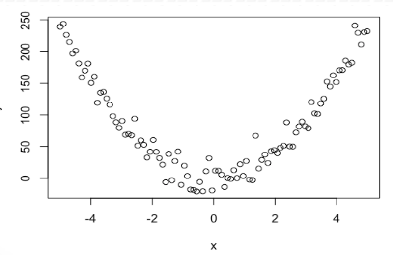
Curved relationship.
Correlation does not imply causation
Source: ETF1100 Week 8 seminar, page 11
Two series can move together without one causing the other. Margarine consumption and Maine’s divorce rate are a spurious correlation in the source.
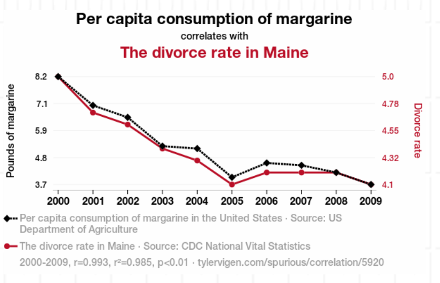
Spurious correlation.
Regression: purpose and variables
Regression analysis uses sample data to model relationships and predict a numerical dependent variable (response, Y) from one or more independent variables (predictors, X).
Source: Workshop6_Regression_Analysis_and_Correlation.pdf, page 5
Identify the variables
A professor predicts exam score from hours studied. Which is the dependent variable? Which is the independent variable?
Answer: exam score is Y; hours studied is X.
Source: Workshop6_Regression_Analysis_and_Correlation.pdf, page 6
Simple and multiple regression
- Simple linear regression: one numerical response and one predictor.
- Multiple linear regression: one numerical response and several predictors.
Source: Workshop6_Regression_Analysis_and_Correlation.pdf, page 7
Choose the model
Predict exam score from hours studied. Is this simple or multiple regression?
Answer: simple linear regression, because there is one predictor.
Source: Workshop6_Regression_Analysis_and_Correlation.pdf, page 8
Focus for this section
We focus on simple linear regression: the relationship between one numerical predictor and one numerical response. Multiple regression follows in Week 6.
Source: Workshop6_Regression_Analysis_and_Correlation.pdf, page 9
Inspect the scatterplot first
Plot Y against X before fitting a line. A roughly linear pattern supports regression; curvature suggests another model. Compare plots A and B.
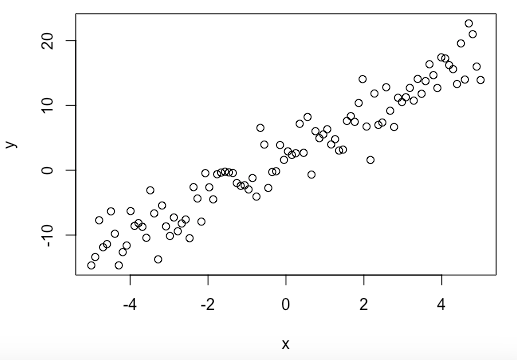
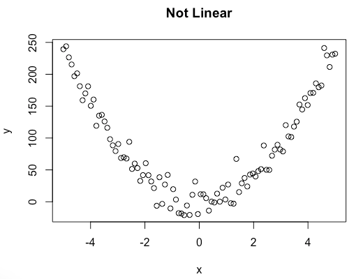
Source: Workshop6_Regression_Analysis_and_Correlation.pdf, page 10
Scatterplot check
Which source plot is more suitable for a straight-line model? Look for an approximately linear cloud rather than curvature. Return to the two plots before deciding.
Source: Workshop6_Regression_Analysis_and_Correlation.pdf, page 11
The population model
For observation i, the population model is Y_i=\beta_0+\beta_1X_i+\varepsilon_i. Here \beta_0 is the population intercept, \beta_1 is the population slope, and \varepsilon_i is the random error.
Source: Workshop6_Regression_Analysis_and_Correlation.pdf, page 12
The fitted sample line
We estimate the unknown population coefficients from a sample: \widehat{Y}_i=b_0+b_1X_i. The slope b_1 is the average change in predicted Y for a one-unit increase in X. Its sign gives the direction of the fitted relationship.
Source: Workshop6_Regression_Analysis_and_Correlation.pdf, page 13
Least squares
Excel estimates b_0 and b_1 using least squares. Choose the line that minimises the sum of squared residuals: SSE=\sum_{i=1}^{n}(Y_i-\widehat{Y}_i)^2. A residual is the observed value minus its fitted value.
Source: Workshop6_Regression_Analysis_and_Correlation.pdf, page 14
Residuals on a plot
Each vertical distance from an observation (X_i,Y_i) to the fitted line is a residual e_i=Y_i-\widehat{Y}_i. Least squares minimises \sum e_i^2. See the source plot for the illustrated observations.
Source: Workshop6_Regression_Analysis_and_Correlation.pdf, page 15
Simple regression workflow
- Draw a scatterplot and assess whether a line is reasonable.
- Fit the line in Excel and interpret intercept and slope.
- Describe correlation and make predictions.
- Evaluate R^2 and test the slope.
Source: Workshop6_Regression_Analysis_and_Correlation.pdf, page 16
Real estate: guided task
Use the source workbook’s RealEstate sheet. Plot price (Y, AUD thousands) against area (X, sqm), fit a linear trend, and obtain Excel regression output. Interpret coefficients, correlation, predictions for 600 and 900 sqm, and the slope confidence interval.
Source: Workshop6_Regression_Analysis_and_Correlation.pdf, page 17
Real estate scatterplot
The trendline is \widehat{\text{Price}}=539.36+1.0928(\text{Area}), with R^2=0.3204. Price is in AUD thousands; the slope is positive.
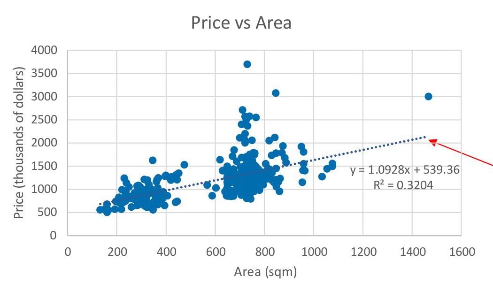
Real estate scatterplot and trendline from the source.
Source: Workshop6_Regression_Analysis_and_Correlation.pdf, page 18
Regression in Excel
In Data → Data Analysis → Regression, set Y to Price and X to Area. Tick Labels if headings are included, then choose an output location.
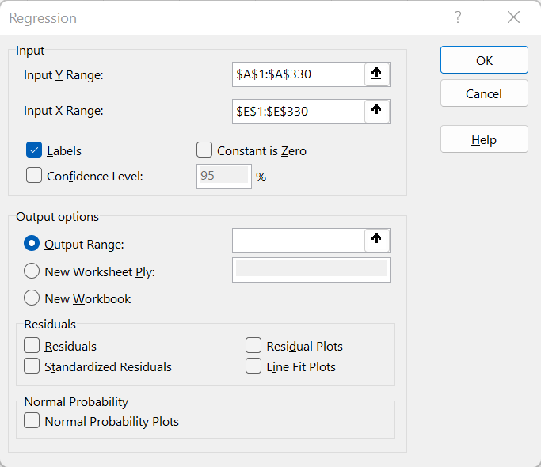
Excel regression setup from the source.
Source: Workshop6_Regression_Analysis_and_Correlation.pdf, page 19
Read the Excel output
The source Excel output gives 329 observations (price in AUD thousands):
| Measure | Estimate |
|---|---|
| Multiple R | 0.5660 |
| R Square | 0.3204 |
| Intercept coefficient | 539.3572 |
| Area coefficient | 1.092774 |
Source: Workshop6_Regression_Analysis_and_Correlation.pdf, page 20
Real estate: coefficients
From the Excel output, the intercept is about 539.357 and the Area coefficient is about 1.0928 (Price in AUD thousands). Thus \widehat{\text{Price}}=539.357+1.0928(\text{Area}).
Source: Workshop6_Regression_Analysis_and_Correlation.pdf, page 21
Interpret the real estate coefficients
- Intercept: at area 0 sqm, the model predicts AUD $539,357. This is outside a sensible property context, so interpret cautiously.
- Slope: one additional sqm is associated with about AUD $1,093 higher predicted price, on average.
Source: Workshop6_Regression_Analysis_and_Correlation.pdf, page 22
Correlation coefficient
The sample correlation r measures the direction and strength of a linear relationship, with -1\le r\le1. A positive value indicates variables tend to rise together; a negative value indicates they tend to move oppositely. Values nearer \pm1 indicate a stronger linear pattern.
Source: Workshop6_Regression_Analysis_and_Correlation.pdf, page 23
Real estate: find correlation
Read Multiple R in the Excel output. In a one-predictor model, give it the sign of the slope to obtain the sample correlation r. You can also use Excel =CORREL(price_range, area_range).
Source: Workshop6_Regression_Analysis_and_Correlation.pdf, page 24
Real estate: interpret correlation
The sample correlation is r=0.566: a moderate positive linear association between area and price. The positive sign agrees with the positive fitted slope.
Source: Workshop6_Regression_Analysis_and_Correlation.pdf, page 25
Compare predicted property prices
Use the exact Excel coefficients for two predictions: \widehat{Y}_{900}-\widehat{Y}_{600}=b_1(900-600). The source output gives a difference of about AUD $327,832. The larger property has a higher fitted price because b_1>0.
Source: Workshop6_Regression_Analysis_and_Correlation.pdf, page 26
Real estate: slope interval
Locate the Lower 95% and Upper 95% values for the Area coefficient in Excel’s output. The interval estimates the population change in mean price for one additional sqm.
Source: Workshop6_Regression_Analysis_and_Correlation.pdf, page 27
Interpret the slope interval
The source interval corresponds to approximately AUD $920 to $1,266 per additional sqm. We are 95% confident that the population mean price increase per additional sqm lies in this range.
Source: Workshop6_Regression_Analysis_and_Correlation.pdf, page 28
Marketing: your turn
Use the source workbook’s Marketing sheet. Predict spend (Y, dollars) from income (X, dollars). Draw the scatterplot, fit the model in Excel, interpret the coefficients and correlation, predict spend at $50,000 income, and interpret the slope interval.
Source: Workshop6_Regression_Analysis_and_Correlation.pdf, page 29
Marketing: expected relationship
Before analysing the data, expect a positive association: a customer with higher income may spend more on non-essential items. Compare this expectation with the fitted scatterplot.
Source: Workshop6_Regression_Analysis_and_Correlation.pdf, page 30
Marketing scatterplot
The chart shows a positive pattern. In dollars, \widehat{\text{Spend}}\approx8254.6+0.2956(\text{Income}) and R^2\approx0.5508.
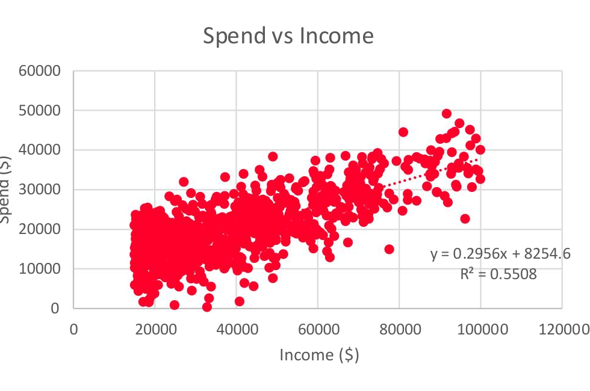
Spend versus income scatterplot and fitted line from the source.
Source: Workshop6_Regression_Analysis_and_Correlation.pdf, page 31
Marketing: Excel regression
Use Data → Data Analysis → Regression. Set Spend as Y and Income as X. The source page shows the resulting output; read the coefficients, Multiple R, R Square and confidence interval from it.
Source: Workshop6_Regression_Analysis_and_Correlation.pdf, page 32
Marketing: coefficient interpretation
- Intercept \approx8254.575: predicted spend at income $0 is about $8,255; this may not be useful outside the observed income range.
- Slope \approx0.296: each extra $1,000 of income is associated with about $296 more predicted spend, on average.
Source: Workshop6_Regression_Analysis_and_Correlation.pdf, page 33
Marketing: correlation
The sample correlation is r=0.742, a moderately strong positive linear association between income and spend. Its positive sign agrees with the fitted slope.
Source: Workshop6_Regression_Analysis_and_Correlation.pdf, page 34
Marketing: prediction
Insert income X=50{,}000 into the fitted equation: \widehat{\text{Spend}}=b_0+b_1(50{,}000)\approx\$23{,}035. Use the exact Excel coefficients when available.
Source: Workshop6_Regression_Analysis_and_Correlation.pdf, page 35
Marketing: slope interval
The source 95% interval for the income slope is approximately 0.277 to 0.314 dollars of spend per income dollar. Equivalently, a $1,000 increase in income is associated with $277 to $314 higher mean spend.
Source: Workshop6_Regression_Analysis_and_Correlation.pdf, page 36
Evaluate the fitted model
After estimating and interpreting a line, examine how much variation it explains using R^2, then test whether the population slope differs from zero.
Source: Workshop6_Regression_Analysis_and_Correlation.pdf, page 37
Real estate: model evaluation
For the RealEstate sheet, interpret the coefficient of determination R^2 and test whether the slope is statistically significant.
Source: Workshop6_Regression_Analysis_and_Correlation.pdf, page 38
Coefficient of determination
R^2 is the share of total variation in Y explained by its fitted linear relationship with X: 0\le R^2\le1. A larger R^2 means a greater share of sample variation is accounted for by the fitted model.
Source: Workshop6_Regression_Analysis_and_Correlation.pdf, page 39
Partitioning variation
The total sum of squares splits into explained and unexplained variation: SST=SSR+SSE,\qquad R^2=\frac{SSR}{SST}=1-\frac{SSE}{SST}. Here SSR is regression variation and SSE is residual variation.
Source: Workshop6_Regression_Analysis_and_Correlation.pdf, page 40
What makes a good fit?
If SSR is a large share of SST, the line explains much of the observed variation. If SSE is large, much remains unexplained. Use R^2=SSR/SST to express this share as a percentage.
Source: Workshop6_Regression_Analysis_and_Correlation.pdf, page 41
Real estate: locate R²
Read R Square in the Excel output for the RealEstate model. What percentage of variation in observed prices is accounted for by area in the fitted line?
Source: Workshop6_Regression_Analysis_and_Correlation.pdf, page 42
Real estate: interpret R²
The model has R^2\approx0.3204. About 32% of the sample variation in property prices is explained by area through this linear model; about 68% remains unexplained.
Source: Workshop6_Regression_Analysis_and_Correlation.pdf, page 43
Why test the slope?
Least squares produces a fitted line even when the population relationship might have zero slope. Test the population coefficient \beta_1 before claiming evidence of a linear relationship.
Source: Workshop6_Regression_Analysis_and_Correlation.pdf, page 44
Slope test: hypotheses
- Two-sided: H_0:\beta_1=0 versus H_1:\beta_1\ne0.
- Positive relationship: H_0:\beta_1=0 versus H_1:\beta_1>0.
- Negative relationship: H_0:\beta_1=0 versus H_1:\beta_1<0.
Source: Workshop6_Regression_Analysis_and_Correlation.pdf, page 45
Slope test: statistic and p-value
Excel reports t=\frac{b_1-0}{SE(b_1)},\qquad df=n-2. Its default regression output gives a two-sided p value. For a one-sided test in the direction of the estimated slope, halve that value.
Source: Workshop6_Regression_Analysis_and_Correlation.pdf, page 46
Slope test: decision and conclusion
At significance level \alpha, reject H_0 when p<\alpha; otherwise, do not reject it. State the conclusion in terms of the business variables and the population relationship.
Source: Workshop6_Regression_Analysis_and_Correlation.pdf, page 47
Real estate: two-sided slope test
Test H_0:\beta_1=0 versus H_1:\beta_1\ne0 at \alpha=0.05. Excel gives t=12.415 and two-sided p=2.9314\times10^{-29}. Reject H_0: there is evidence of a linear relationship between area and price.
Source: Workshop6_Regression_Analysis_and_Correlation.pdf, page 48
Real estate: positive slope test
Test H_0:\beta_1=0 versus H_1:\beta_1>0 at \alpha=0.05. The slope is positive, so the one-sided p value is 2.9314\times10^{-29}/2. Reject H_0: there is evidence of a positive linear relationship.
Source: Workshop6_Regression_Analysis_and_Correlation.pdf, page 49
Marketing: evaluate the model
For Spend versus Income, interpret R^2, then test at the 5% level whether the population slope is positive.
Source: Workshop6_Regression_Analysis_and_Correlation.pdf, page 50
Marketing: Excel output reminder
Use the Marketing regression output to locate R Square, the Income coefficient, its t statistic and its two-sided p value.
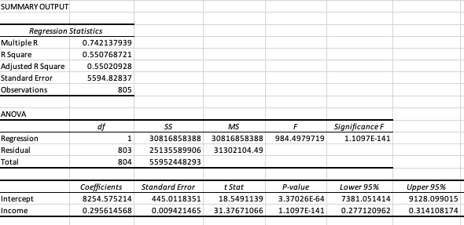
Selected Marketing output from the source.
Source: Workshop6_Regression_Analysis_and_Correlation.pdf, page 51
Marketing: interpret R²
The fitted model has R^2=55.08\%. It explains about 55.08% of observed variation in spend. The other 44.92% remains unexplained by this one-predictor line.
Source: Workshop6_Regression_Analysis_and_Correlation.pdf, page 52
Marketing: positive slope test
At \alpha=0.05, test H_0:\beta_1=0 versus H_1:\beta_1>0. Excel gives t=31.377 and two-sided p=1.1097\times10^{-141}. The one-sided p is half of this. Reject H_0: there is evidence of a positive linear relationship between income and spend.
Source: Workshop6_Regression_Analysis_and_Correlation.pdf, page 53